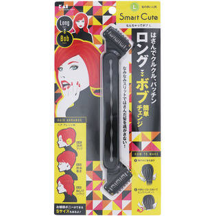

返回列表
产品名称：ＳｍａｒｔＣｕｔｅ なんちゃってボブＬ

貝印 ＳｍａｒｔＣｕｔｅ なんちゃってボブＬ ＿
メーカー 貝印
JANコード 4901601282276
商品の特徴
髪の多い人用
はさんでクルクル、パッチン ロング→ボブ 簡単チェンジ
なみなみスリットではさんだ髪を逃がさない！
ヘアアレンジ例
浴衣アップ 夜会巻き ねじりハーフアップ
成分・分量
本体：エラストマー樹脂
ピン：ハリガネ・シリコーン
用法及び用量
・乳幼児の手が届かない安全な場所に保管して下さい。
・スリット部を強く引っ張らないで下さい。破損する恐れがあります。
・ピンと樹脂部の根元をねじらないようにご注意ください。破損の原因となります。